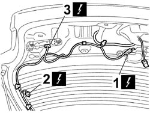
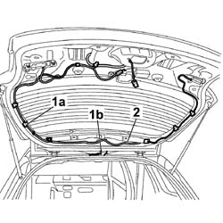
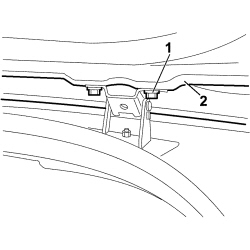
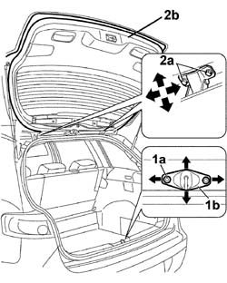

7210E56 R.R. TAILGATE
- Path
- Procedures > 72 PANELS AND FRAMES > 7210 REMOVING-REFITTING > 7210E EXTERNAL PARTS > 7210E56 R.R. TAILGATE
- Kind
- repair procedure (removal / refitting; the operation number is the code)
- Applies to
- all engines; all production periods
- Interactive page
- https://sloeber94.github.io/elrnDB-fCrm/en/#/194001251
Applies to: all engines; all production periods
 Removing
Removing
 Refitting
Refitting- Open the tailgate.
- Turn the ignition key to the OFF position.
- Disconnect the negative battery terminal.
Description | Connector | |
|---|---|---|
BATTERY |
Op. 7015A04 TAILGATE INTERIOR PANEL - R+R
Op. 7015A58 INTERNAL TAILGATE MOULDING (ONE) - R+R
(BOTH)
Op. 7015A07 TAILGATE SIDE TRIM - R&R
Op. 7015B10 SINGLE TAILGATE LOCK - R+R OR REPAIR WITH PANEL/PROTECTION REMOVED
Op. 7015B60 EXTERIOR HANDLE FOR OPENING TAILGATE WITH TAILGATE UNLOCKING SWITCH - R.R.
Working from inside the tailgate:
1. Disconnect the electrical connection from the rear wiper motor.
Description | Connector | |
|---|---|---|
REAR WIPER MOTOR |
2. Disconnect the electrical connections on both sides of the tailgate, from the heated rear window.
Description | Connector | |
|---|---|---|
HEATED REAR WINDSCREEN |
3. Disconnec the electrical connections from the mobile tail-lights.
Description | Connector | |
|---|---|---|
LEFT REAR LIGHT CLUSTER (MOVING SECTION ON BOOT LID) | See F035 LEFT REAR LIGHT CLUSTER (MOVING SECTION ON BOOT LID) |
Description | Connector | |
|---|---|---|
RIGHT REAR LIGHT CLUSTER (MOVING SECTION ON BOOT LID) | See F036 RIGHT REAR LIGHT CLUSTER (MOVING SECTION ON BOOT LID) |

Applies to: all engines; all production periods
1. Release the wiring from the retaining clips (1a), prise the bulkhead coupling (1b) from the tailgate hole.
- Disconnect the pipe carrying fluid to the screen washer fluid jet.
2. Carefully withdraw the wiring harness.

Applies to: all engines; all production periods
- Support the tailgate
(BOTH)
Op. 7015A28 L/H OR R/H TAILGATE TELESCOPIC STRUT (ONE) - R+R
1. Undo the bolts fixing the tailgate to the hinges on both sides.
2. Remove the tailgate.

Applies to: all engines; all production periods
Refitting
Removing- Position the tailgate and screw in the hinge fixing bolts without tightening them.
(BOTH)
Op. 7015A28 L/H OR R/H TAILGATE TELESCOPIC STRUT (ONE) - R+R
- Fit the bulkhead coupling through the hole in the tailgate.
- Carefully fit the wiring harness through the slots.
- Connect the pipe carrying fluid to the screen washer fluid jet.
- Secure the wiring to the retaining springs.
- Connect the electrical connections to the mobile tail-lights.
Description | Connector | |
|---|---|---|
LEFT REAR LIGHT CLUSTER (MOVING SECTION ON BOOT LID) | See F035 LEFT REAR LIGHT CLUSTER (MOVING SECTION ON BOOT LID) |
Description | Connector | |
|---|---|---|
RIGHT REAR LIGHT CLUSTER (MOVING SECTION ON BOOT LID) | See F036 RIGHT REAR LIGHT CLUSTER (MOVING SECTION ON BOOT LID) |
Connect the electrical connections on both sides of the tailgate to the heated rear window.
Description | Connector | |
|---|---|---|
HEATED REAR WINDSCREEN |
Connect the electrical connection to the rear wiper motor.
Description | Connector | |
|---|---|---|
REAR WIPER MOTOR |
Op. 7015B60 EXTERIOR HANDLE FOR OPENING TAILGATE WITH TAILGATE UNLOCKING SWITCH - R.R.
Op. 7015B10 SINGLE TAILGATE LOCK - R+R OR REPAIR WITH PANEL/PROTECTION REMOVED
(BOTH)
Op. 7015A07 TAILGATE SIDE TRIM - R&R
Op. 7015A58 INTERNAL TAILGATE MOULDING (ONE) - R+R
Op. 7015A04 TAILGATE INTERIOR PANEL - R+R
1. Loosen the bolts (1a) fixing the tailgate lock striker (1b).
- Adjust the position of the tailgate, checking the alignment with the outer profile.
- Check that the striker is perfectly matched with the tailgate lock.
2. After adjustment, tighten the bolts (2a) securing tailgate (2b) to the hinges.
- Tighten the bolts fixing the lock striker.

Applies to: all engines; all production periods
- Connect the negative battery terminal.
Description | Connector | |
|---|---|---|
BATTERY |
Topics linked from this page (11)
- 7015A04 TAILGATE INTERIOR PANEL - R+R
- 7015A07 <x>TAILGATE SIDE TRIM - R&R</x>
- 7015A28 L/H OR R/H TAILGATE TELESCOPIC STRUT (ONE) - R+R
- 7015A58 INTERNAL TAILGATE MOULDING (ONE) - R+R
- 7015B10 SINGLE TAILGATE LOCK - R+R OR REPAIR WITH PANEL/PROTECTION REMOVED
- 7015B60 EXTERIOR HANDLE FOR OPENING TAILGATE WITH TAILGATE UNLOCKING SWITCH - R.R.
- A001 BATTERY
- F035 LEFT REAR LIGHT CLUSTER (MOVING SECTION ON BOOT LID)
- F036 RIGHT REAR LIGHT CLUSTER (MOVING SECTION ON BOOT LID)
- N016 REARSCREEN WIPER MOTOR
- P055 HEATED REAR WINDSCREEN